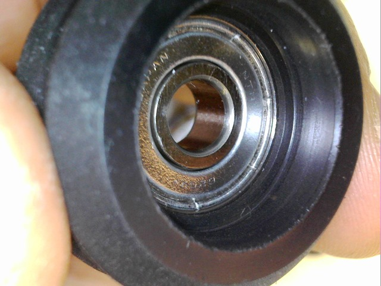
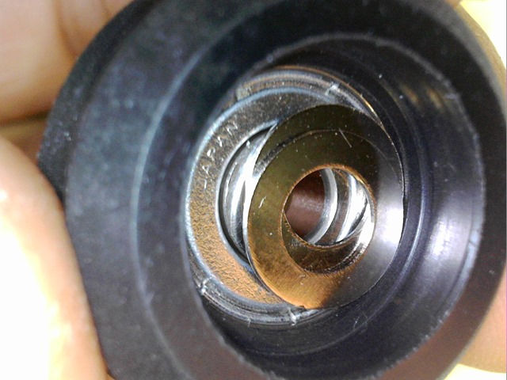
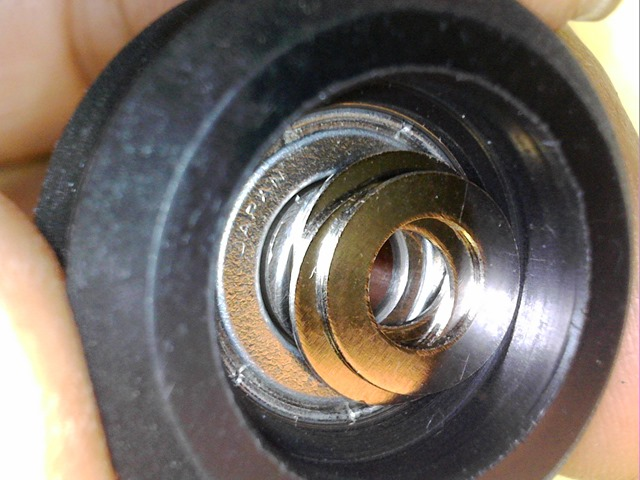
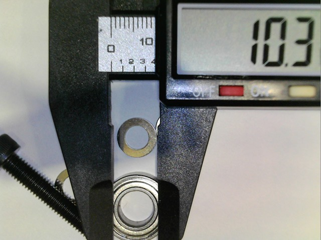
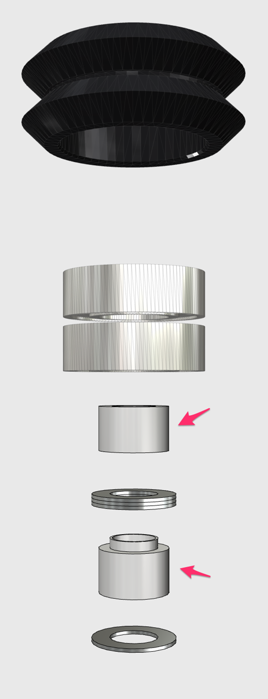
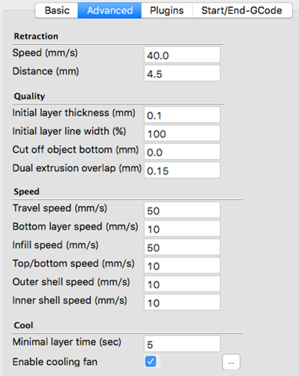
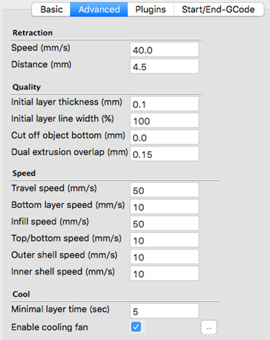

ちょっと風邪気味で、仕事から帰ってきたら、即効寝てしまいました。
さて、昨日の続きです。一回はめたタイヤのベアリングをどうやって取り出そうかと考えました。普通につついてもかなりしっかりハマッて出てこないので、ガスストーブで、熱を加えることによってM5 ボルトでひっかけて取り出すことが出来ました。
で、ベアリングの間の隙間には0.4mm 厚のワッシャーを3枚はめることでとりあえず対応。後に計測してみましたが、この隙間は約1mm のようでした。

2枚だと足りない感じ。

3枚でとりあえず。1.2mm の隙間を確保します。

こうしてはめてみたら、すごくスムーズになりました。さすが、日本製のベアリングです。映像は今度の休みにでも作ってみます。
同じ原理で、中華製のベアリングにも施して、使えるか検討してみたいと思います。しかし、購入した中華のベアリングは、8mm の内径のもので、688zz というタイプですのでM5 のボルトと手持ちのワッシャーでスペーサーをうまく作る必要があります。内径が、5mm の 625zz も10個で205円と激安なのでゲットしていますが、まだ届いていません。

感触としては、中華ベアリングは確かにすべりは悪いですが、このV-Type のタイヤでフレームを挟み込むとき、それなりに圧力をかけて挟むので、差はそれほどでないのではとも思っています。
ということで、このスペーサーを設計して、同じD-Slot のブラケットにはめて比較してみたいと思います。
作りました。これをプリントしてみます。0.25mm 厚の部分はうまくプリントできるでしょうか？

さくっとプリントしようとしようと思ったら、ノズルからPLAが出てこないので、帰ってからやることに。さぁ、今日行けば3連休ですぞ。
もう、今年もあと数日。速いですね。


 
